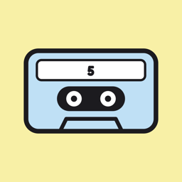

Loop5Loop5 サポート
いつも聴くYouTubeの曲や動画を、カセットみたいに5本ずつ（BOX 2つで最大10本）登録して、ワンタップで開けるアプリです。
よくある質問
テープを登録するには？
YouTubeアプリで動画を開き、「共有」→「Loop5」を選ぶと登録できます。共有の一覧に Loop5 が出ないときは、いちばん右の「その他」から表示を有効にしてください。アプリの右上の「＋」から URL を貼り付けても登録できます。
タップしても再生されません
Loop5 はアプリの中で動画を再生しません。タップすると YouTube アプリ（入っていない場合は Safari）でその動画が開きます。動画が削除・非公開になっている場合は開けません。
「1→5 連続再生」でプレイリストが入りません
連続再生は YouTube の仕組みで一時的なリストを作るため、動画・ショート・ライブのテープだけが対象です。プレイリストのテープは含まれません。
ウィジェットの置き方は？
ホーム画面の何もないところを長押し →「編集」→「ウィジェットを追加」→「Loop5」から選べます。ウィジェットには、アプリで開いている BOX が表示されます。ウィジェット右上のスイッチで BOX を切り替えることもできます。
きせかえパックを買ったのに使えません
アプリ右下の「きせかえ →」から「購入を復元」をお試しください。購入時と同じ Apple アカウントでサインインしている必要があります。
返金したい
購入は App Store を通じて行われるため、返金は Apple のサポート（reportaproblem.apple.com）からお申し込みください。返金の可否は Apple の判断によります。
機種変更したらテープが消えました
テープは端末の中にだけ保存されます。新しい iPhone へ移すには、iCloud バックアップまたはクイックスタートで端末ごと引き継いでください。きせかえパックは「購入を復元」で引き継げます。
お問い合わせ
ご質問・不具合のご報告は、メールでお送りください。
info@mellowy.site
お使いの iPhone の機種と iOS のバージョンを書いていただけると、解決が早くなります。